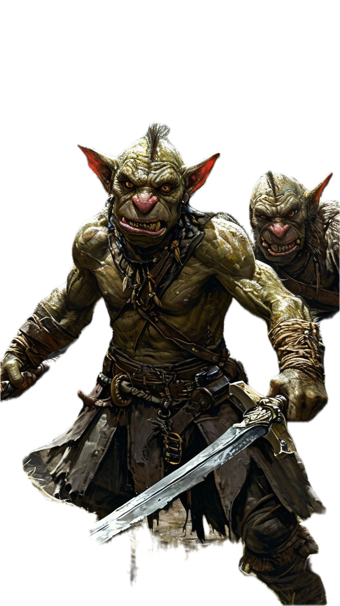

CAPÍTULO 2 — EL ORIGEN: CUANDO SURGEN LOS GOBLINS
Los estudiosos coinciden en algo: el goblin es una criatura europea, nacida en la mezcla perfecta entre miedo, superstición y noches demasiado oscuras.
Primeros Textos
El nombre goblin probablemente proviene del francés antiguo gobelin, documentado por primera vez en el siglo XII. Allí aparece un relato sobre “un espíritu pequeño, oscuro y travieso” que rondaba las casas medievales causando problemas domésticos. Otros textos medievales describen criaturas similares con nombres distintos, pero comportamientos casi idénticos:
- Kobold (alemán)
- Hobgoblin (inglés)
- Bogey o Bogeyman
- Puck
- Duende (español)
Aunque cada región los nombraba diferente, el concepto era el mismo: seres diminutos que viven entre nosotros, invisibles, y que disfrutan causar caos.

2.2. Del Folclore al Miedo Colectivo
Europa medieval era un lugar peligroso: enfermedades, hambrunas, supersticiones…
Ante lo desconocido, los humanos buscaban explicaciones.
¿Se perdieron tus monedas?
Goblins.
¿Se rompió una herramienta sin razón aparente?
Goblins.
¿Se escuchan ruidos por la noche?
Goblins, por supuesto.
La figura del goblin se volvió parte del día a día, como una excusa para comprender lo incomprensible.
CAPÍTULO 2 — EL ORIGEN: CUANDO SURGEN LOS GOBLINS
Los estudiosos coinciden en algo: el goblin es una criatura europea, nacida en la mezcla perfecta entre miedo, superstición y noches demasiado oscuras.
Primeros Textos
El nombre goblin probablemente proviene del francés antiguo gobelin, documentado por primera vez en el siglo XII. Allí aparece un relato sobre “un espíritu pequeño, oscuro y travieso” que rondaba las casas medievales causando problemas domésticos. Otros textos medievales describen criaturas similares con nombres distintos, pero comportamientos casi idénticos:
Aunque cada región los nombraba diferente, el concepto era el mismo: seres diminutos que viven entre nosotros, invisibles, y que disfrutan causar caos.
2.2. Del Folclore al Miedo Colectivo
Europa medieval era un lugar peligroso: enfermedades, hambrunas, supersticiones… Ante lo desconocido, los humanos buscaban explicaciones. ¿Se perdieron tus monedas? Goblins. ¿Se rompió una herramienta sin razón aparente? Goblins. ¿Se escuchan ruidos por la noche? Goblins, por supuesto. La figura del goblin se volvió parte del día a día, como una excusa para comprender lo incomprensible.